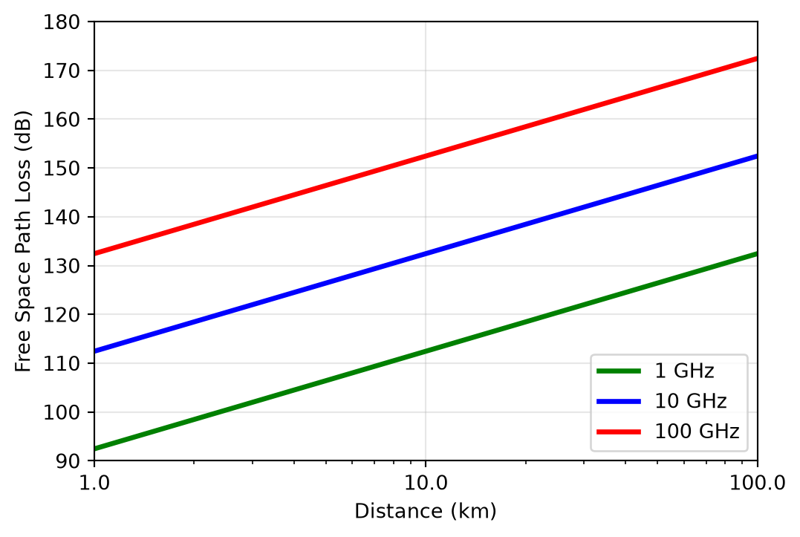
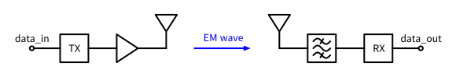
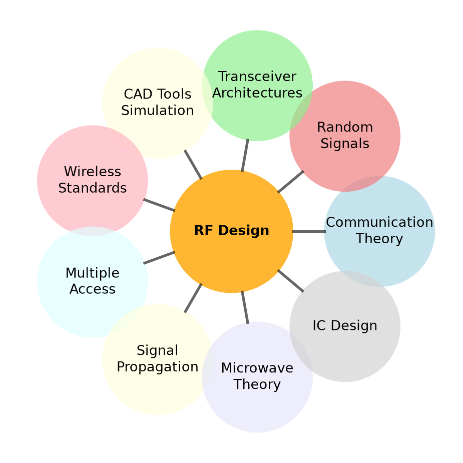
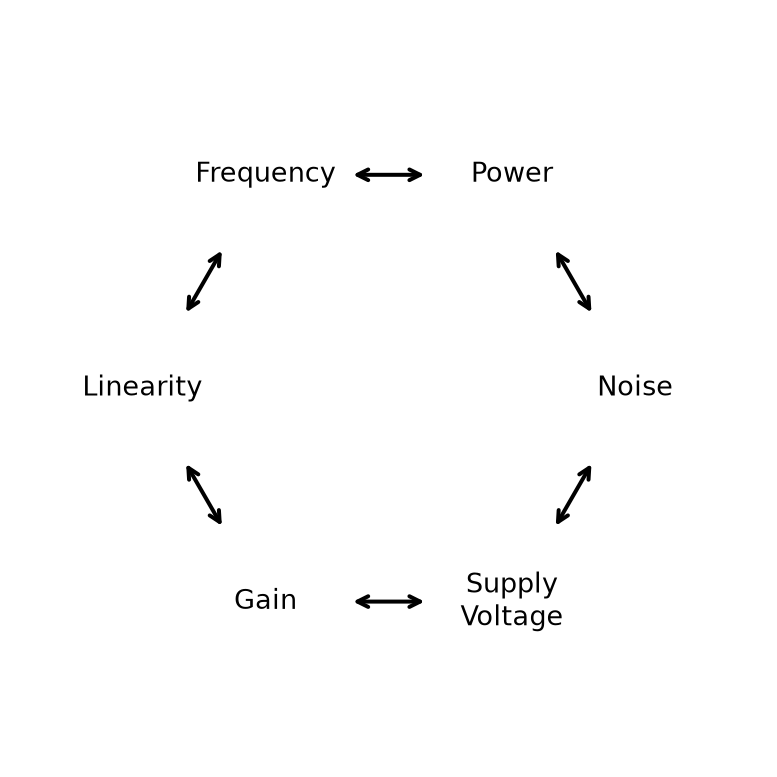

Radio-Frequency Integrated Circuits
Important
All course material (source code of this document, Jupyter notebooks for calculations, Xschem circuits, etc.) is made publicly available on GitHub (follow this link) and shared under the Apache-2.0 license.
Please feel free to submit pull requests to fix typos or add content! If you want to discuss something that is not clear, please open an issue.

Figure 1: The block diagram of a simple wireless system.
\[ P_\mathrm{R} = \frac{P_\mathrm{T} \cdot G_\mathrm{T}}{4 \pi d^2} \cdot A_\mathrm{R} = P_\mathrm{T} \cdot \frac{A_\mathrm{R} \cdot A_\mathrm{T}}{d^2 \lambda^2} \tag{1}\]
\[ G = \frac{4 \pi A}{\lambda^2}, \tag{2}\]
\[ A \propto \lambda^2 \]
\[ c = \lambda f. \]
| Application | Frequency | Wavelength |
|---|---|---|
| FM Radio | 88 MHz to 108 MHz | 3.4 m down to 2.8 m |
| WiFi (lowband) | 2.4 GHz | 12.5 cm |
| WiFi (highband) | 5 GHz | 6 cm |
| Bluetooth | 2.4 GHz | 12.5 cm |
| Cellular | 0.6 GHz to 5 GHz | 50 cm down to 6 cm |
| GNSS | 1.575 GHz | 19 cm |
Note 1: Wavelength Calculation
Let’s calculate the wavelength for a Bluetooth signal at 2.4 GHz. Given:
Using the relationship \(c = \lambda f\), we can solve for wavelength:
\[\lambda = \frac{c}{f} = \frac{3 \times 10^8\,\text{m/s}}{2.4 \times 10^9\,\text{Hz}} = 0.125\,\text{m} = 12.5\,\text{cm}\]
This means that a quarter-wavelength monopole antenna for 2.4 GHz Bluetooth would be approximately 3.1 cm long, which easily fits into most mobile devices.
\[ P|_\text{dBm} = 10 \cdot \log_{10} \left( \frac{P|_\text{W}}{1\,\text{mW}} \right) \tag{3}\]
Note 2: Wireless Transmission
We use the following parameters:
Using Equation 1 we calculate
\[ P_\mathrm{R} = P_\mathrm{T} \cdot \frac{0.13 \lambda^2 \cdot 0.13 \lambda^2}{d^2 \lambda^2} = P_\mathrm{T} \cdot 0.13^2 \left( \frac{\lambda}{d} \right)^2 = 2.64\,\text{pW} = -85.8\,\text{dBm} \]
With the transmit power of 1 W = 30 dBm we have an attenuation of 116 dB! This is a very large number!
\[ \text{FSPL} = 20 \cdot \log_{10}(d / \text{m}) + 20 \cdot \log_{10}(f / \text{Hz}) + 20 \cdot \log_{10} \left( \frac{4\pi}{c} \text{m/s} \right). \tag{4}\]

| Standard | GSM (2G) | WCDMA (3G) | LTE (4G) 5G NR |
WiFi | Bluetooth | GNSS |
|---|---|---|---|---|---|---|
| Frequency range (MHz) | 850, 900, 1800, 1900 | 850, 900, 1700, 1900, 2100 | Multiple bands 450…7100 (FR1), 24000…48000 (FR2) | 2400, 5000, 6000 | 2400 | 1500, 1200 |
| Modulation | GMSK, 8PSK (EDGE) | QPSK (DL), BPSK (UL), 16QAM (HSPA), 64QAM (HSPA) | QPSK, 16QAM, 64QAM (DL+UL) 256QAM (DL+UL) | BPSK, QPSK, 16QAM, 64QAM, 256QAM, 1024QAM, 4096QAM | GFSK (m=0.28…0.35), \(\pi\)/4-DQPSK, 8DPSK | BPSK, QPSK |
| Transmission/ multiple access | TDMA, FDMA | DS-CDMA | OFDMA (DL+UL), SC-FDMA/DFT-s-OFDM (UL) | OFDM, CSMA/CA | FHSS | CDMA |
| Duplex | FDD | FDD | FDD, TDD | TDD | TDD | n/a |
| Standard | GSM (2G) | WCDMA (3G) | LTE (4G) 5G NR |
WiFi | Bluetooth | GNSS |
|---|---|---|---|---|---|---|
| Channel bandwidth | 200 kHz | 5 MHz | 1.4, 3, 5, 10, 15, 20, …, 100 MHz (FR1), 400 MHz (FR2) | 10, 20, 40, 80, 160, 320 MHz | 1 MHz | 16…24 MHz |
| Symbol rate1 | 270.833 ksym/s | 3.84 Msym/s | 15/30/60 ksym/s | 312.5 ksym/s (11a/g/n/ac), 78.125 ksym/s (11ax/be) | 1 Msym/s | 50 sym/s |
| Pulse shaping | Gaussian (BT=0.3) | Root Raised Cosine (\(\alpha\)=0.22) | Rectangular | Rectangular | Gaussian (BT=0.5) | Rectangular |
| Standard | GSM (2G) | WCDMA (3G) | LTE (4G) 5G NR |
WiFi | Bluetooth | GNSS |
|---|---|---|---|---|---|---|
| Transmit power | 1…2 W | 250 mW | 200 mW (FDD), 400 mW (TDD) | 100 mW | 1…100 mW | n/a |
| PAR (UL) | 0 dB (GMSK), 3 dB (8PSK) | 3…8 dB | 6…8 dB | Up to 12 dB | 0 dB (GFSK), 3 dB (8DPSK) | n/a |
| MIMO | no | Not realized (DL 2x2) | DL 4x4 (up to 8x8) | 2x2 (up to 8x8) | no | no |
| Channel bond | no | Up to 4x5 MHz | Up to 7x20/4x100 MHz | Up to 80+80+80+80 MHz | no | no |

